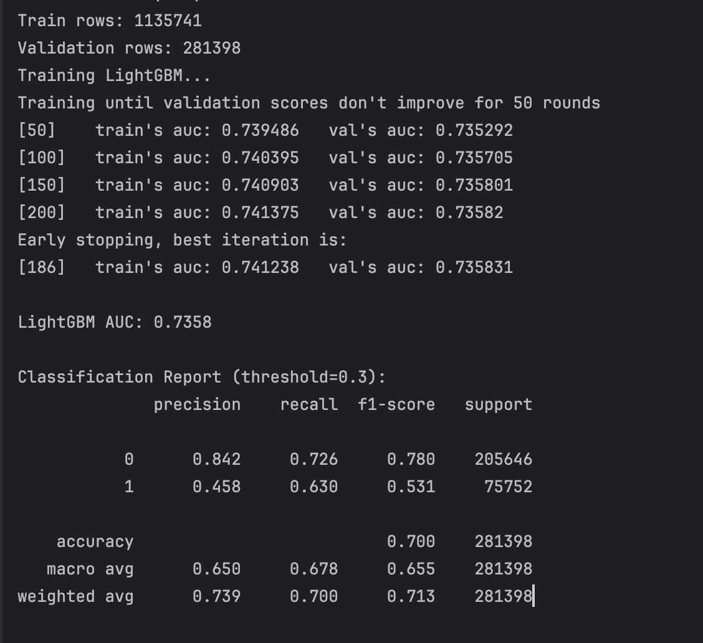
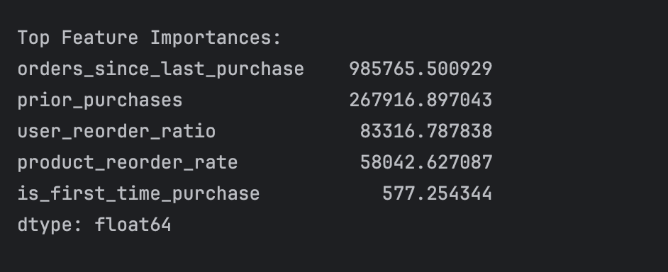
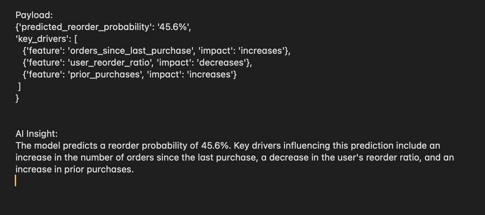
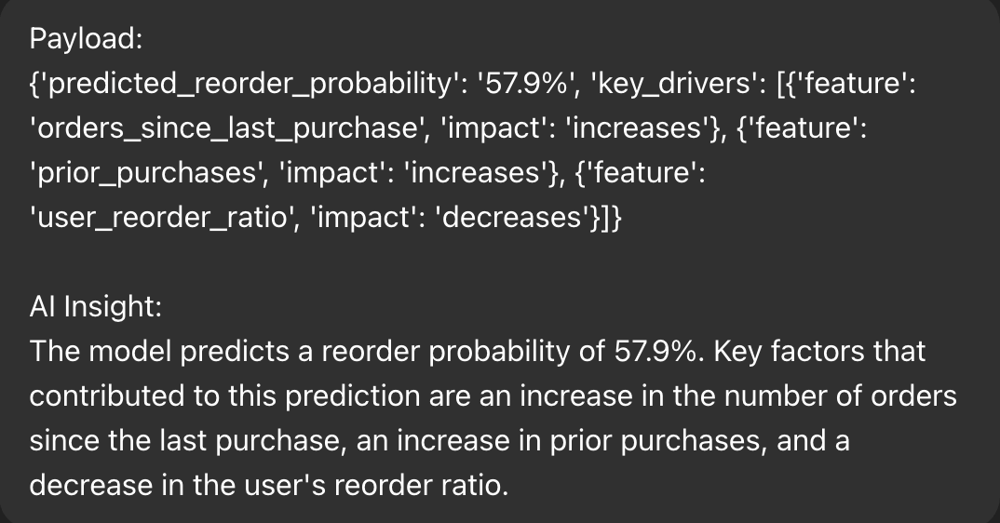

An end-to-end data science system that predicts whether a customer will reorder a product in their next purchase, combining large-scale SQL feature engineering, supervised machine learning, and AI-assisted interpretation using a local LLM.
Predicting product reorders is a core problem in e-commerce demand forecasting, inventory planning, and personalization. This project focuses on predicting whether a specific user will reorder a specific product in their next order.
The system was designed to operate at scale, using SQL-first feature engineering on tens of millions of rows, followed by supervised machine learning and a constrained AI layer that translates model signals into executive-readable insights.
Key Principle: The machine-learning model produces predictions and statistical signals; the AI layer explains those signals without adding inference, causality, or recommendations.
The starting point was to define the problem at the right level of granularity. Rather than predicting whether a user will place another order in general, the task was framed as a user–product–level prediction: given a user’s historical behavior and a product’s reorder characteristics, can we estimate the probability that the user will reorder that specific product in their next purchase?
This framing reflects real e-commerce decisions such as demand forecasting, replenishment planning, and personalization, where the unit of interest is not the customer alone, but the interaction between a customer and a product.
Importantly, the goal was to produce probabilistic outputs, not hard labels, to preserve uncertainty and support downstream decision-making.
Before modeling, the problem was considered conceptually. Product reordering is not uniform behavior: some products are habitual (e.g. staples), while others are exploratory or occasional. Similarly, some users exhibit strong repeat-purchase patterns, while others do not.
This implies that reorder behavior emerges from the interaction of:
As a result, any viable model would need to capture both user behavior and product characteristics, rather than treating either in isolation.
Given the size of the dataset (tens of millions of order–product records), feature engineering was deliberately performed in SQL rather than in-memory notebooks.
This approach allowed:
The data was structured into fact-style tables representing historical user–product interactions, with features designed to summarize past behavior without leaking future information.
Care was taken to ensure that all features were derived strictly from prior orders, maintaining temporal integrity.
Feature design focused on behavioral signals that are meaningful and interpretable:
Missing values were treated as structural, not errors. For example, a missing “orders since last purchase” value indicates that a product has not been purchased before, which is itself informative.
The guiding principle was to preserve semantic meaning rather than aggressively imputing or transforming data.
A simple, interpretable baseline was established first to set expectations and validate the signal in the data. This helped answer an early question: does the data actually contain predictive structure for reordering?
Once this was confirmed, more expressive models were explored to capture non-linear relationships and interactions that simple linear models cannot represent.
Model selection prioritized:
Gradient-boosted decision trees were selected as the final modeling approach due to their strong performance on structured data and their ability to provide feature attribution at the individual prediction level.
Evaluation focused on:
Accuracy alone was not emphasized, as the class distribution and business context make probabilistic ranking more relevant than strict classification.
Rather than stopping at global feature importance, the focus shifted to per-prediction explanations.
For each prediction, the model produces attribution signals indicating which features pushed the prediction higher or lower relative to the baseline. These signals are statistical in nature and describe model behavior, not causality.
This level of interpretability is critical when predictions are used to support operational decisions rather than offline analysis.
While model attributions are informative, they are not always easily digestible by non-technical stakeholders. To address this, a constrained language model was introduced to translate attribution signals into short, neutral explanations.
The AI layer was deliberately limited:
This preserves analytical integrity while improving accessibility.
The final system is best understood as a pipeline:
Each component serves a specific role, and no single part attempts to solve the entire problem alone.
Several trade-offs were made deliberately:
These decisions favor reliability, transparency, and realism over novelty.
The guiding mental loop throughout the project was:
This loop mirrors how real-world data products operate, where trust and clarity are as important as predictive performance.
Predicting product reorders in large-scale e-commerce systems is challenging because customer purchasing behavior is highly variable, context-dependent, and sparsely observed at the individual product level. The problem requires modeling millions of user–product interactions while avoiding data leakage, handling class imbalance, and producing predictions that are not only accurate but interpretable at the level of individual decisions.
This project is built on the Instacart Market Basket Analysis dataset, which contains tens of millions of order–product interactions across users, products, and time. Rather than modeling directly on raw transactional tables, the data was restructured into a modeling-ready format through a series of intermediate aggregation steps.
The raw dataset is highly normalized and optimized for transactional storage, not predictive modeling. A single reorder decision is distributed across multiple tables, making it unsuitable for direct use without careful restructuring.
To support scalable modeling, several intermediate tables were constructed to summarize historical behavior at the user–product level. All feature engineering was performed in SQL to ensure performance, transparency, and strict temporal control.
Special care was taken to preserve temporal integrity. All features were derived strictly from historical orders that occurred before the prediction point, ensuring that no future information leaked into the training data.
Why this matters: The predictive power of the model is driven primarily by how historical behavior is summarized. The majority of the project’s complexity lies in data modeling rather than algorithm selection.
Multiple models were evaluated, starting with logistic regression as a baseline and progressing to gradient-boosted trees for improved non-linear learning.
LightGBM was selected as the final model due to its balance of performance, stability, and ability to generate per-instance attribution signals.


Model outputs are translated into concise, executive-readable explanations using a local large language model (Mistral via Ollama).
The LLM does not generate predictions or recommendations. It is strictly used to interpret model signals, following explicit constraints to avoid hallucination, causal claims, or business advice.


This project demonstrated how large-scale transactional data can be transformed into actionable, interpretable predictions when modeling, data engineering, and system design are treated as a single workflow rather than isolated steps.
Key Takeaway: Predictive models deliver the most value when their outputs can be clearly explained, trusted, and consumed within real decision contexts.